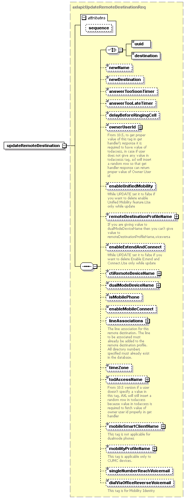

| diagram |  | ||||||||||||
| namespace | http://www.cisco.com/AXL/API/10.5 | ||||||||||||
| type | axlapi:UpdateRemoteDestinationReq | ||||||||||||
| properties |
|
||||||||||||
| children | uuid destination newName newDestination answerTooSoonTimer answerTooLateTimer delayBeforeRingingCell ownerUserId enableUnifiedMobility remoteDestinationProfileName enableExtendAndConnect ctiRemoteDeviceName dualModeDeviceName isMobilePhone enableMobileConnect lineAssociations timeZone todAccessName mobileSmartClientName mobilityProfileName singleNumberReachVoicemail dialViaOfficeReverseVoicemail | ||||||||||||
| attributes |
|
||||||||||||
| source | <xsd:element name="updateRemoteDestination" type="axlapi:UpdateRemoteDestinationReq"/> |